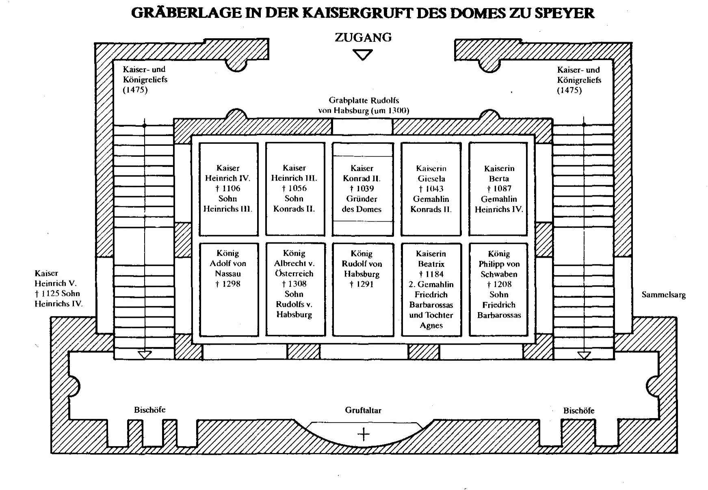

Ahnenforschung (Genealogie), eine Zeitreise in die Vergangenheit
von Wolfgang Singer
Die Ahnenforschung (Genealogie) ist in den USA ein weit verbreitetes Hobby. Manche reisen sogar extra zu diesem Zwecke nach Europa, um ihre Herkunft zu erforschen.
In Deutschland hingegen fristete die Genealogie der Nachkriegszeit lange ein stiefmütterliches Dasein, nachdem sie im Dritten Reich als Ariernachweis missbraucht wurde.
Heute hingegen ist die Genealogie auch in Deutschland ein Hobby, dem sich Jung und Alt widmet, zumal da die Forschung durch das Internet und andere Medien vereinfacht wurde. Viele der oft schwer zu lesenden und zu findende Dokumente wurden zwischenzeitlich digital aufbereitet bzw. in Buchform dargestellt. Es gibt Ahnenprogramme, mit deren Hilfe man sich mannigfache Tabellen und Grafiken anlegen kann und, wenn man es will, dies auch ins Internet stellen und damit ohne große finanzielle Aufwendungen publizieren kann.
Wie komme ich aber zu den Informationen über meine Vorfahren? Es gibt digitalisierte Kirchenbücher, die ich, wenn ich es mir einfach machen will, aus dem Internet abrufen kann, es gibt sog. Ortsfamilienbücher (http://www.online-ofb.de/), also Geburts- und Sterbedaten von Personen in einer bestimmten Region oder Orten, mit Berufsangabe und manchmal auch mit sonstigen Vermerken bis zurück in das 15. oder 16. Jahrhundert, es gibt schließlich auch Ortschroniken, in welchen die örtlichen Begebenheiten aus den vergangenen Jahrhunderten oft mit Namensnennung beschrieben werden. Und es gibt die Mormonen (zahlreiche Angehörige dieser Glaubensgemeinschaft betreiben intensive Ahnenforschung, da sie nach der Lehre ihrer Kirche ihren nicht mormonisch getauften Vorfahren durch die Taufe für Verstorbene die Möglichkeit der Errettung verschaffen können, wenn sie deren Namen und Lebensdaten kennen), die weltweit die Kirchenbücher oder sonstigen Unterlagen abgeschrieben und ins Netz gestellt haben unter www.familysearch.org, es gibt Bücher oder Abhandlungen über einzelne Personennamen und es gibt regionale Vereine.
Alle gängigen Ahnenprogramme weltweit basieren auf dem GEDCOM (engl. GEnealogical Data COMmunication) Format. Es ist dies die Spezifikation eines Datenformates, das den Austausch von Daten zwischen verschiedenen Computerprogrammen zur Genealogie ermöglicht. Auf diese Art und Weise wird es mir ermöglicht, durch einen Mausklick ganze Zweige von Vorfahren eines Ahnenforschers in meine Ahnendatei zu übernehmen. Außerdem muss ich dann, um die Datei lesen zu können nicht das gleiche Ahnenprogramm besitzen wie mein Partner.
Das GEDCOM-Format (Dateiendung: ged) ist rein text-basiert und enthält die Daten der einzelnen Personen eines Familienstammbaumes, sowie Informationen über ihre familiären Beziehungen. Es wurde von der „Kirche Jesu Christi der Heiligen der Letzten Jahre“ (Mormonen) entwickelt, um ihre Mitglieder bei der Familienforschung zu unterstützen. Zwischenzeitlich wurde dieses Format zu einem internationalen Standard weiter entwickelt.
Dabei muss es nicht bei einem passiven Sammeln bleiben. Man kann die Daten einer Ahnensammlung aus einem Genealogieprogramm als komprimierte gedcom-Datei über einen Verein ins Internet stellen oder man kann daraus eine homepage generieren und selbst seine Vorfahren ins Internet stellen. In diesem Falle wird man natürlich aus Datenschutzgründen die noch lebenden Personen nicht näher beschreiben. Da man über das Internet und weltweit über eine E-Mail Adresse bekannt wird, wird man sehr schnell Bekanntschaften mit anderen Genealogen oder sogar Verwandten knüpfen.
Auf diese Art und Weise lernte ich 3 Brüder aus Las Vegas kennen mit dem Namen Singer und gemeinsamen Vorfahren aus Weil im Schönbuch. Oder eine Lehrerin namens Vogt ebenfalls aus den USA. Unser gemeinsamer Vorfahre Georg Singer (mein 2-facher Urgroßvater) wanderte 1854 in die USA aus, ließ aber seine Familie in Weil im Schönbuch zurück. Es war kein Zufall, dass im Jahr 1854 sehr viel Schwaben ihre Heimat verließen und sich in Richtung USA einschifften: Ein schwerer Hagelsturm vernichtete die gesamte Ernte in Weil und so waren viele Bauern ihrer Existenzgrundlage beraubt, so dass sie gezwungen waren ihr Glück in der Fremde zu suchen. Weil im Schönbuch wurde damals zum Notstandsgebiet erklärt und viele Familien, so auch meine Vorfahren, konnten sich nur über Wasser halten, weil ihnen ein Familienmitglied aus den USA jahrelang Dollars schickte, bis man seit dem Brand von Chicago nichts mehr von Georg alias George hörte, so dass man ihn schließlich in Deutschland für tot erklären ließ. Meine Kusine aus den USA jedoch hat im Internet recherchiert und vermutet, dass sich Georg dort geheiratet habe und die Verbindung zu seiner Heimat Württemberg abgebrochen hat. Dichtung oder Wahrheit?
Das Problem der Sekundärliteratur bzw. auch des Internets ist, dass man sich nicht immer darauf verlassen kann, dass alles was da zu lesen ist, auch wirklich der Realität entspricht. Es gibt auch Leute, die bewusst falsche Angaben machen, nur um adlige Vorfahren nachweisen zu können. Ein prominentes Beispiel ist der inzwischen verstorbene Geschichts- und Ahnenforscher Prof. Decker-Hauff, der auch viele Bücher über Württemberg geschrieben hat. Jüngst ist posthum eine von ihm in die Welt gesetzte offensichtliche Geschichtsfälschung aufgeflogen, auf welche beinahe auch ich reingefallen wäre, da es um eine Vorfahrin geht, die auch ich in meiner Ahnenreihe nachweisen kann: Prof. Decker-Hauff behauptete, dass die Mutter von Elisabeth Lyher (geb. „von Dagersheim“ 1417-1448) Antonia hieß und eine uneheliche Tochter von Eberhard IV. von Wütttemberg (1388-1419) gewesen sei, was durch keinerlei Dokumente nachgewiesen werden kann, wie posthum im Jahre 2002 nachgewiesen wurde (Vermerk: die Mutter von Eberhard IV. hieß Antonia Visconti und stammte aus Mailand, so dass Decker-Hauff flugs einem Kind der Elisabeth den Namen Antonia gab). Zitat: Wie sich in einem Artikel von Otto-Guenter Lonhard "Die Familie Volland und ihre Verbindungen zu Entzlin, Dreher und Lyher" (gedruckt in Suedwestdeutsche Blätter fuer Familie- und Wappenkunde - Band 23 - Heft 9 - Maerz 2003"- jetzt herausstellte, flog im Jahre 2002 in Deutschland ein mittelprächtiger Wissenschaftsskandal auf. Der allseits geschätzte Professor Hanns-Martin Decker-Hauff wurde grober Betrügereien überführt: hat Fälschungen und sogar gänzlich Erfundenes in die Welt gesetzt und damit genealogische Fiktionen, die er wohl persönlich gerne so gehabt hätte, "belegt". Sehr viele Ahnenforscher aus dem schwäbischen Raum müssen deshalb diesen adeligen Zweig, der bis zu Karl dem Großen führt, aus ihrem Stammbaum streichen. Im Internet allerdings werden weiterhin diese Fälschungen publiziert und somit werden viele Ahnenforscher auf eine falsche Fährte geführt.
In diesem Zusammenhang sei auf eine interessante neuere Forschung hingewiesen: Die Humangenetiker haben nachgewiesen, dass die aus diesem Zweig „Antonia Visconti“ –Gräfin von Württemberg - abstammenden Nachkommen des Hauses Württemberg oft Geisteskrankheit haben, was auf diese genannte Antonia Visconti, Gräfin von Württemberg, zurückzuführen ist.
Hat man keine adligen Vorfahren, so endet die Ahnenforschung oft schon im 15. oder 16. Jahrhundert, da die Vorfahren von bürgerlichen Familien selten so dokumentiert wurden wie die von Adligen. Wie schon angedeutet, es gibt aber auch andere Wege der Ahnenforschung, die Humangenetik:
Das Erbgut zweier Menschen ist sich zu 99,9 Prozent ähnlich, alle angeborenen Unterschiede werden von weniger als 0,1 Prozent der DNA bestimmt. Diese Unterschiede werden Haplotypen genannt. Vor über 106000 Jahren begannen unsere Vorfahren von Afrika aus, sich langsam aber beständig über die Kontinente auszubreiten. Die Auswanderung aus Afrika vollzog sich in 4 großen Wellen. Erst vor rund 59.000 Jahren folgte die dritte große Migrationswelle. In dieser bis vor 47.000 Jahren anhaltenden Phase verbreitete sich der Homo sapiens in Europa, dem Mittleren Osten, Indien und Indonesien. Diese Auswanderungswelle hinterließ wahrscheinlich die meisten genetischen Spuren im Erbgut der heutigen Menschen außerhalb Afrikas. Diese Migration war es auch, die in Europa endgültig die Ära des Homo sapiens und das Ende des Neandertalers einläutete. Die vierte Welle der Migration schließlich ereignete sich vor 45.000 bis vor 29.000 Jahren.Die Ursache waren Klimaänderungen bedingt durch eine Änderung der Erdachse. Als sich diese Vorfahren in der ganzen Welt verteilten, passte sich ihre DNA mit der Zeit der neuen Umgebung an, ihre DNA entwickelte sich, bedingt durch ihre Isolierung, in unterschiedliche Richtungen und sie begannen, sich genetisch voneinander zu unterscheiden. Heute können wir diese Unterschiede der DNA nachverfolgen und gewinnen dadurch Erkenntnisse über die Migration unserer Vorfahren und ihre Entwicklung in verschiedene Bevölkerungsgruppen.
In Afrika gibt es eine große genetische Vielfalt, also viele Haplotypen, d. h. Gruppe von Personen mit gemeinsamen genetischen Abwandlungen. Die Besiedlung der Erde mit dem heutigen Menschentyp vollzog sich jedoch in sehr kleinen Gruppen und in verschiedenen Auswanderungswellen, was zur Folge hatte, dass jeweils nur ein bestimmter Haplotyp seine Wanderung antrat (Der Mensch hat in jeder seiner Körperzellen zwei mal 23 Chromosomen. Die sind nichts anderes als lange Stränge von Desoxyribonukleinsäure, kurz DNA genannt. Sie setzt sich unter anderem zusammen aus vier Grundbausteinen, den Nukleinbasen Adenin, Cytosin, Guanin und Thymin, abgekürzt A, C, G und T. In der DNA-Doppelhelix sind die Basen in Paaren angeordnet. Die menschliche DNA besitzt etwa drei Milliarden Basenpaare. Bestimmte Abschnitte von Basenpaaren bilden Gene - die Blaupause für die Proteine. Das menschliche Genom enthält nach heutiger Erkenntnis schätzungsweise 30 bis 40.000 Gene.
Abweichende Haplotypen entstehen dadurch, dass sich 2 gegenüberliegende Teilstücke dieser DNA sich in 1 Buchstaben unterscheiden etwa wie diese beiden: GATCGA - GATGGA). Von Kontinent zu Kontinent entstanden dadurch typische Variationen. Die Europäer eroberten ihren Kontinent demnach von Anfang an mit einer etwas eingeschränkten genetischen Ausstattung (genetischen Flaschenhals). Die genetische Vielfalt nimmt deshalb mit zunehmender Entfernung von Afrika ab, da immer nur kleine Gruppen in andere Regionen auswanderten.
Die Herkunftsbestimmung mit Hilfe der Haplotypen ist mit relativ einfachen Mitteln und schnell zu ermitteln. Anhand von Speichelproben wird der Haplotyp ermittelt und damit ist auch eine etwas vage und grobe Analyse der Wanderungsbewegung möglich. So wurde bei mir zum Beispiel auf Grundlage der Y-DNA Untersuchung festgestellt, dass ich zu dem in Deutschland seltenen Typ J2 mit dem genetischen Marker M172 gehöre, das heißt, meine in grauer Vorzeit aus Nordafrika ausgewanderten afrikanischen Vorfahren hielten sich lange Zeit im Mittleren Osten auf und besiedelten den Mittelmeerraum einschließlich Nordafrika. Mein Haplotyp ist in Italien (20%); der Türkei, dem Balkan und Nord-Afrika besonders häufig anzutreffen. Einen diesbezüglichen direkten Nachweis habe ich natürlich nicht, da sich diese Wanderungsbewegungen vermutlich vor Jahrtausenden abspielten. Es gibt etwa 18 bedeutendere Haplogruppen väterlicher Ahnenreihen. Diese werden mit Buchstaben von A bis R benannt und mit Ziffern in Untergruppen und Kleinbuchstaben in weitere Untergruppen aufgeteilt – also z. B. E, E3 und E3a. Die Haplogruppe R1b ist die in europäischen Bevölkerungsgruppen am häufigsten auftretende Haplogruppe. Man geht davon aus, dass sie sich vor etwa zehn- bis zwölftausend Jahren in Europa ausgebreitet hat. Die Haplogruppe J2 ist das Ergebnis der Reise einer Bevölkerungsgruppe in Afrika die vor ca. 60000 Jahren mit dem Marker M168 begann. Dieser Marker mutierte schließlich vor ca. 40000 Jahren zu M89. Dieser Gruppe gehören 90 bis 95 % der Menschen außerhalb von Afrika an und diese Gruppe besiedelte schließlich Asien bis nach Korea. Aus dieser Gruppe entstand schließlich der Haplotyp, dem ich angehöre, J2 (M172).
Oder mit anderen Worten: Die Forscher haben für ihre Auswertung der Haplotypen bislang nur einige Stellen des Genoms gelesen, das bei jedem Menschen rund 3,2 Milliarden Bausteine umfasst. Das nächste große Ziel der Genetiker weltweit ist es, die Genome von 1000 Menschen (www.spiegel.de/wissenschaft/mensch/0,1518,530538,00.html) vollständig zu sequenzieren . Das würde eine weitaus bessere zeitliche und geographische Analyse und eine viel genauere Herkunftsbestimmung zulassen. Die vollständige Analyse der Gene eines Menschen wurde bisher nur bei einer Handvoll Menschen durchgeführt und ist zurzeit auch noch etwas teuer (ca. 300.000 Euro) und aufwendig.
Die Genealogen profitieren von der Genetik dagegen erst wirklich mit der Entdeckung der Y-chromosomalen Vererbung und der Vererbung, die durch die Mitochondrien weiter gegeben wird. Zur Erklärung: Die Gesamtheit des menschlichen Erbmaterials befindet sich in Form von 46 (2 mal 23) Chromosomen im Zellkern. Zwei davon bestimmen das Geschlecht, bei Frauen 2 X Chromosomen, bei Männern ein X und ein Y Chromosomen. Männer vererben an ihre männlichen Nachkommen das Y Chromosom, Frauen vererben das DNA, welches sich in den Mitochondrien („Kraftwerke der Zellen“) befindet und zwar sowohl an die männlichen als auch an die weiblichen Kinder. Durch den genetischen Vergleich verschiedener Individuen kann somit eine Verwandtschaft nachgewiesen werden. Wir stehen jedoch erst am Anfang dieses Forschungszweiges, so dass man annehmen kann, dass man in Zukunft sehr genaue Angaben über Verwandtschaften und Wanderungsbewegungen der Vorfahren machen kann.
Ein denkbares Beispiel wäre folgender Fall: Im Jahr 1559 brannte Weil im Schönbuch wegen Brandstiftung ab. Mit dem Brand wurden auch die Kirchenbücher vernichtet, so dass schriftliche Nachweise des Namens Singer vor dieser Zeit nicht mehr vorliegen. Es ist aber dokumentiert, dass es Singer Familien vor dieser Zeit in Horb gab. Durch Genanalyse heute lebender Nachfahren der Singer aus Horb und Vergleich meiner Gene ließe sich somit nachweisen, ob meine Familie mit den Singer aus Horb verwandt ist und mit welcher Wahrscheinlichkeit in einer bestimmten Generationenzahl ein gemeinsamer Vorfahre anzutreffen ist. Oder ein anderes Beispiel: Durch Genanalyse der Knochen der Zarenfamilie und Blutproben einer gewissen „Anastasia“, die lange Zeit in Unterlengenhardt bei Bad Teinach wohnte und vorgab sie sei eine Tochter des Zaren, konnte definitiv nachgewiesen werden, dass Ann alias Anastasia keine Zarentochter war.
Auch Gendefekte können einen Hinweis auf eine weit zurückliegende gemeinsame Abstammung geben: Ein dänischer Forscher hat festgestellt, dass alle Menschen mit blauen Augen von einem Urahn abstammen, bei dem diese Mutation zum ersten Mal vor 6000 bis 10000 Jahren im Gebiet des Schwarzen Meeres auftrat.
Dieselben Veränderungen tragen auch blauäugige Menschen aus der Türkei und Jordanien in ihren Genen – nicht jedoch die Japaner. Offensichtlich haben sie diese Mutation alle von demselben Menschen geerbt.
Man muss jedoch nicht so weit in die Vergangenheit gehen, um interessante Verwandtschaften nachzuweisen: Meine 13 fachen Urgroßeltern Johannes Vaut (ca. 1415 -1490/91) und seine Ehefrau Elisabeth Plieninger sind auch die Vorfahren von Friedrich Schiller (9 fachen Urgroßeltern). Johannes Vaut (Schultheiß in Zuffenhausen 1478-1490) und Elisabeth Plieninger sind im schwäbischen Raum sog. „Massenahnen“, d. h. sehr viele können Johannes Vaut als Vorfahren nachweisen, z. B. Grace Kelly, Wilhelm Liebknecht, Maximilian Ernst Ludwig Planck, Ernst Reuter, Richard von Weizäcker, Bertold Brecht, Wilhelm Hauff und Albert Schweitzer – um nur einige zu nennen.
Auch in diesem Fall wurden wissentlich oder ungewollt dem Schiller adlige Vorfahren angedichtet: Die Ehefrau von Johannes Vaut war keine Adlige mit Namen Elisabeth von Plieningen, sondern schlicht und einfach eine Bürgerliche Namens Elisabeth Plieninger. Wieder lag Prof. Decker-Hauff falsch (Bericht von Hansmartin Decker-Hauff über "Vorfahren und Nachkommen von Hans Vaut und Elisabeth von Plieningen" -1958-) und führte zahlreiche Genealogen auf eine falsche Fährte.
Der Sohn von Johannes und Elisabeth, Conrad Vaut, geb. 1446 in Zuffenhausen galt als Protakonist der bürgerlich ständischen Opposition gegen die Ansprüche des Herzoghauses. Unter dem Vorwand der Verschwörung wurde er auf Weisung des Herzogs Ulrich von Württemberg verhaftet, auf dem Hohenasperg gefoltert, in einem Schauprozess schließlich zum Tode verurteilt und am kommenden Tage sogleich auf dem Marktplatz von Stuttgart enthauptet und gevierteilt.
Ahnenforschung ist eine unendliche Geschichte. In diesem kurzen Aufsatz kann auch nur ein Bruchteil dessen aufgezählt werden, was aus den tausenden von Daten zu entnehmen ist. Interessant sind insbesondere auch die Ereignisse im Zusammenhang mit geschichtlichen Begebenheiten, wobei manchmal Dichtung und Wahrheit eng beieinander liegen wie folgendes Beispiel zeigt:
Erst neulich stieß ich auf die homepage der Schriftstellerin Brigitte Klump www.brigitte-klump.eu/Gralsfamilie.htm. Sie ist mit mir nachweislich verwandt und unser ältester bisheriger Stammvater heißt Conrad Klumpp, geb. 1560. Frau Klump hat nach 18 jähriger Forschertätigkeit in 12 Ländern den Stammbaum der Familie Renaud de Bolougne (720-1755) erforscht und ist auf allerlei geschichtliche Unstimmigkeiten gestoßen: Die Familie de Bolougne hat angeblich im Zuge der Templerverfolgung nach ihrer Flucht nach Niederösterreich einen neuen Namen angenommen: Golomb bzw. Glomb. Dies heißt auf Ungarisch Taube und bezieht sich auf das Symbol des inneren Kreises des Templerordens. Ab 1468 verwalteten sie unter dem Namen Klumpp 140 Jahre lang Radolfzell. Aus Glaubensgründen mussten sie vermutlich über die Schweiz nach Württemberg ziehen.
Die Gefahr bei der Ahnenforschung ist die, dass man das Rad zum zweiten Mal erfindet. Man sollte sich deshalb am Beginn seiner Forschung bei Vereinen erkundigen, ob es schon Abhandlungen oder Bücher über bestimmte Personen oder Nachlässe von Ahnenforschern gibt. Die Geschäftsstelle des Vereins für Familien- und Wappenkunde in Württemberg und Baden e.V. Postfach 10 54 41, D-70047 Stuttgart, unterhält eine umfangreiche Bibliothek, die ich leider bis jetzt noch nicht besucht habe.
Irgendwann macht man sich auch Gedanken darüber, wie viel Menschen es zu einer bestimmten Zeit gab oder auch wie viel Menschen es insgesamt auf der Erde gab. Auch bei dieser Frage spielte die Genforschung eine Rolle. So stellte man fest, dass die Genvielfalt der heutigen Menschheit wesentlich größer sein müsste. Man deutet das dadurch, dass vor 72000 Jahren eine globale Katastrophe die Menschen beinahe ausrottete (Ausbruch des Supervulkans Toba auf der Insel Sumatra), so dass nur noch wenige tausend Menschen übrig blieben. Jeder heute lebende Mensch muss deshalb von diesen Menschen abstammen.
In „Bild der Wissenschaft“ 5/2009 wird beschrieben, wie viele Menschen je gelebt haben. Dazu muss ein Anfangsdatum gesetzt werden. Die Vereinten Nationen haben das Jahr 50000 vor Chr. als den Nullpunkt der globalen Volkszählung gesetzt, da spätestens zu diesem Zeitpunkt der Homo sapiens seine afrikanische Heimat verließ um die ganze Welt zu besiedeln.
Um 8000 vor Christus, als der Mensch sesshaft wurde und Ackerbau betrieb, dürften etwa 5 Millionen Menschen gelebt haben. Bis 1 nach Christus war die Weltbevölkerung auf ca. 300 Millionen Menschen gewachsen. Damals war die Geburtenrate bei 80 Geburten pro 1000 Menschen. Wegen der hohen Kindersterblichkeit betrug die durchschnittliche Lebenserwartung jedoch nur 10 Jahre.
Um 1200 nach Christus dürften rund 450 Millionen Menschen die Erde bevölkert haben. Wegen der Pest flachte das Bevölkerungswachstum bis zum 17. Jahrhundert ab. Um 1800 überschritt die Weltbevölkerung die Milliarden Grenze, im Juli 2016 leben ca. 7,44 Milliarden Menschen auf der Erde. Zählt man alle Menschen zusammen, die je geboren wurden, so kommt man auf eine Zahl von ca. 108 Milliarden Menschen.
Kaiser Heinrich IV. ist der 28-fache Urgroßvater von Wolfgang, Kaiser Heinrich III. ist der 29-fache Urgroßvater, Kaiser Konrad II. ist der 29-fache Urgroßvater, Kaiserin Berta ist die 28-fache Urgroßmutter und Kaiserin Beatrix ist die 25-fache Urgroßmutter.
